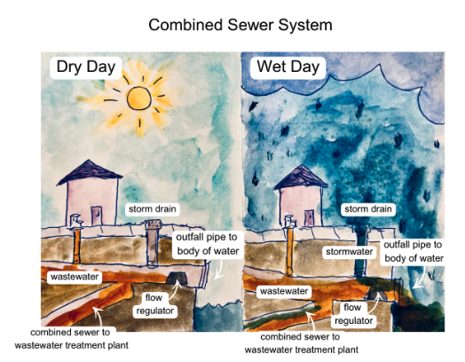
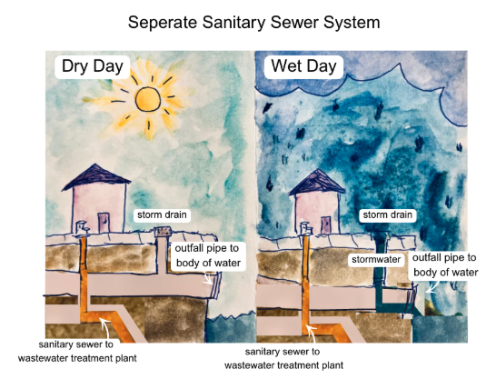

Density = Inlets ÷ Acres. Click a column to sort, a row to zoom to that district.
District
Inlets
Acres
Density (per acre)
About This Map
This map allows you to navigate to storm inlets (also known as storm drain inlets, curb inlets, or catch basins). Storm inlets are places where stormwater (rain, runoff, snow, etc.) enters a pipe network. In this case, the pipe network is the Custer Avenue Sewershed in Atlanta, GA. This is a combined sewer system (CSS), meaning stormwater and sewage share the same pipe (see below). This CSS is a part of the historic Intrenchment Creek watershed, whose headwaters run beneath downtown Atlanta and connect to other waterways that lead eventually to the Atlantic Ocean.
What is a combined sewer? (This sewershed type)
Combined sewer systems use the same pipe for sewage and stormwater, creating a contaminated, untreated combination of wastewater. On a dry day, wastewater flows to a wastewater treatment plant to be processed. On a wet day, however, if stormwater levels combined with wastewater exceed the combined sewer flow regulator capacity, contaminated wastewater pours into waterways, leaving harmful contaminants in the environment in an event called a combined sewer overflow (CSO).

What is a separate sanitary sewer system? (Not this sewershed type)
Not every sewershed works this way. A separate sanitary sewer system uses one pipe for sewage and a different pipe for stormwater, so stormwater is never treated as wastewater. Rain runoff goes straight to a nearby body of water instead of to a treatment plant, and sanitary sewer overflows are far less common since heavy rain doesn't add volume to the sewage pipe.

Why elevation matters
The elevation shown for each storm inlet isn't just trivia — it drives how fast water moves through the system:
"The steep uplands (7% slope), feature a large proportion of impervious area and minimal greenspace. Water slows and settles in the shallow lowlands (1% slope)."
"The Intrenchment Creek headwaters' sharp steep elevations in the upper portions with flatter lowlands in the historic creek channels, promote high velocity erosive flows in the upper basin that slow down and accumulate into flooding in the lower portions."
In short: inlets high in the watershed shed water fast into the pipe network; once that flow reaches the flatter, lower-elevation basin near Custer Avenue, it slows down, backs up, and is more likely to surcharge or trigger a CSO during heavy rain.